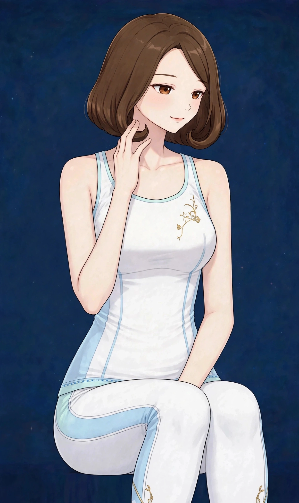

梅田で目の下のクマケア｜美容整体で目元の印象と首・肩の巡りにアプローチ｜ステラポラリス 梅田・女性専用美容・見た目

寝不足でもないのに「疲れてる？」と聞かれる。目の下のクマや目元のたるみは、顔の印象を大きく左右します。当店には「目の疲れ」のページもありますが、こちらは疲労感ではなく「見た目の印象」に絞って解説します。
クマの見え方には種類がある
目の下のクマは、一般に、巡りの滞りで青っぽく見えるもの、色素の沈着で茶色っぽく見えるもの、目元のたるみやふくらみの影で黒っぽく見えるものに分けて語られます。見え方の背景が違えば、ケアの方向も変わります。
当店のケアがアプローチできるのは、主に巡りと姿勢に関わる部分です。首・肩の張りで顔まわりの巡りが滞ると、目の下は暗く見えやすくなります。図1のように、目元だけでなく首・肩まで含めて眺めることが大切です。色の変化そのものについての判断は医療の領域のため、気になる場合は皮膚科などへの相談をおすすめします。
自分のクマの背景を知る手がかりとして、朝と夕方、寝不足の日とよく眠れた日で見え方を比べる方法があります。眠れた日に薄くなるなら巡りや疲労の影響が大きく、いつも同じなら影や色の要素が大きい可能性があります。
こんなサインはありませんか？ — 目の下のクマ・目元のたるみのチェックリスト
- 寝不足ではないのに疲れて見られる
- 目の下が青っぽく、または影のように見える
- 夕方になるとクマが目立つ
- 目元のたるみやふくらみが気になる
- 首や肩の張りも一緒に感じる
- 画面を見る時間が長い
- 顔全体がくすんで見える気がする
- 大事な日に限ってクマが気になる
当てはまる項目が多いほど、巡りや姿勢に負担が集まっている可能性があります。次の「要因」と見比べて、自分のパターンを確かめてみてください。
目元が暗く見えやすい要因
- 睡眠の質と量：睡眠不足は、目の下の巡りを滞らせ、クマを目立たせる代表的な要因です。時間だけでなく、眠りの深さも関係します。
- 首・肩の張りと巡り：顔まわりの巡りは首を通ります。首や肩が張っていると巡りは滞りやすく、目の下の暗さとして表れることがあります。
- 画面作業と目の使い方：画面を長時間見続ける生活では、目のまわりがこわばり、瞬きも減ります。目の疲れのページとも関連する部分です。
- 目元のたるみと影：年齢とともに目元の支えが変わると、ふくらみやたるみの影がクマのように見えます。影による見え方は、姿勢や照明でも変わります。
- 冷え：体が冷えると巡り全体が緩やかになり、顔色や目元の印象にも影響します。エアコンの効いた環境も要因のひとつです。
- こすり過ぎ：目元をこするクセは、皮膚への負担となり、色の変化につながることがあります。かゆみがある場合は、こすらず医療機関への相談を。
図1｜目元と顔全体の印象
東洋医学から見た考え方
東洋医学では、目のまわりには膀胱経や胃経、胆経などの経絡が集まるとされ、目の状態は全身の状態を映す場所として捉えます。目の下を通る胃経のラインは、むくみやクマの見立てでよく挙げられます。
また、疲れの蓄積は肝や腎といった臓腑の見立てと関連づけられることがあります。施術では、目元に直接触れるのではなく、首・肩・頭まわりの張りをほぐし、顔全体の巡りを助ける進め方を取ります。
代表的なツボ
目元のケアでよく挙げられるツボを紹介します。目のまわりは非常にデリケートです。眼球を押すことは絶対にせず、骨の際をやさしく触れる程度に行ってください。
図2｜目元で見たいポイント
おすすめ施術
美容整体・オイルマッサージ
施術では、目元に直接強い刺激を入れることはせず、まず首・肩・頭まわりの張りをオイルマッサージでほぐし、顔まわりの巡りの土台を作ります。そのうえで美容整体で、こめかみや眉まわり、頬といった目元周辺に、やさしい圧で丁寧に触れていきます。
画面作業で固まった首や姿勢も一緒に確認します。目元の印象が明るく見えるようアプローチするには、目元だけでなく、巡りの通り道である首・肩を整えることが近道です。
施術中は目を閉じて休んでいただく時間も大切にしています。90分の休息そのものが、目元の回復を助ける要素にもなります。
自宅でできるセルフケア
目元のセルフケアは「温める・こすらない・首をほぐす」が基本です。目のまわりの皮膚は薄いため、どんなケアもやさしさを最優先にしてください。
- 1．蒸しタオルで温める目の上に蒸しタオルを1分ほど乗せて温めます。巡りが助けられ、目のまわりのこわばりもゆるみます。就寝前がおすすめです。
- 2．首・肩のストレッチ首をゆっくり回し、肩を大きく回すストレッチを。目元の巡りの通り道である首をほぐすことが、目元のケアにつながります。
- 3．画面からの休憩作業中は時々遠くを見て、瞬きを増やす意識を。目の使い方を区切ることが、こわばりの蓄積を防ぎます。
- 4．睡眠リズムの見直し就寝前のスマホを控え、起きる時間をそろえるなど、睡眠の質を整える工夫も目元のケアの一部です。
図3｜目元まわりのやさしいケア

場面別の注意
大事な予定の前日
前日は早めに休み、目を酷使しないことがいちばんの準備です。施術は前日までに行い、当日は温めるケアに留めてください。
画面作業が続く日
目元が重く感じたら、蒸しタオルと首のストレッチでリセットを。作業環境の明るさや画面の位置も見直してみてください。
寝不足が続く時期
ケアだけで補うには限界があります。休息の確保を優先し、施術は回復のための時間としてお使いください。
受診の目安
次のような場合は、サロンでのケアの前に医療機関への受診をおすすめします。
- 目の痛みや充血が続いている
- 視界のかすみや見え方の変化がある
- 片目だけに強い症状がある
- 目の下の腫れが急に強くなった
- 頭痛や吐き気を伴う目の不調がある
当店は医療機関ではなく、診断は行いません。迷うときは、まずかかりつけの医療機関にご相談ください。
よくある質問
Q．「目の疲れ」のページと何が違いますか？
あちらは画面仕事による疲れ感そのもの、こちらはクマやたるみといった見た目の印象を扱います。両方気になる場合は、当日の配分を調整しますので、あわせてご覧ください。
Q．クマは薄くなりますか？
巡りが関係するクマについては、首・肩を整えることで印象が明るく見えるようアプローチできます。色素の沈着によるものなど、背景によっては医療の領域になる場合もあり、その場合は皮膚科への相談をおすすめします。
Q．目元を直接マッサージしてもらえますか？
目元は非常にデリケートなため、眼球まわりへの強い施術は行いません。周辺のこめかみや頬、首・肩から巡りを助ける進め方が、安全で効果的なアプローチです。
Q．コンシーラーで隠すのとどちらがよいですか？
役割が異なるため、比べるものではありません。メイクは当日の見え方を助け、施術は巡りや姿勢といった背景にアプローチします。両方を組み合わせる方も多くいます。
関連するお悩みページ
関連する経絡ページ
ご予約
ステラポラリス（大阪・梅田／女性専用）｜美容整体・オイルマッサージ 90分 10,000円｜月〜土 17:00〜22:00・完全予約制・中崎町駅徒歩5分
ご予約はLINE公式アカウントで受け付けています。希望の日時と、気になる場所を送ってください。
さらに学びたい方へ：現場で使われる専門書（PR）
このページのテーマに合わせて選んだ本と、当店の施術でも参考にしている専門書です。


※本ブロックのリンクはAmazonアソシエイト・プログラムおよび楽天アフィリエイトによる広告リンクです。使用感の保証をするものではありません。